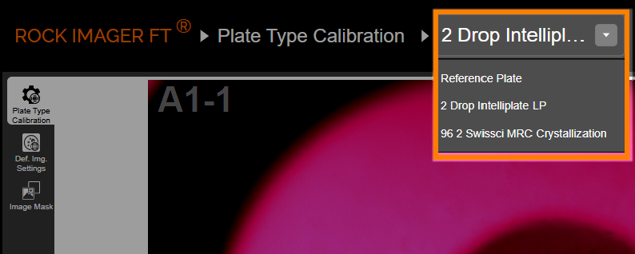
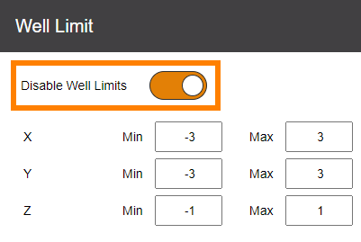
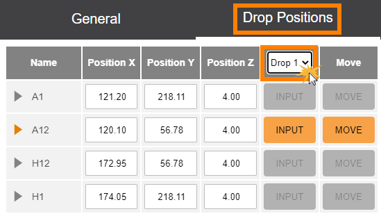
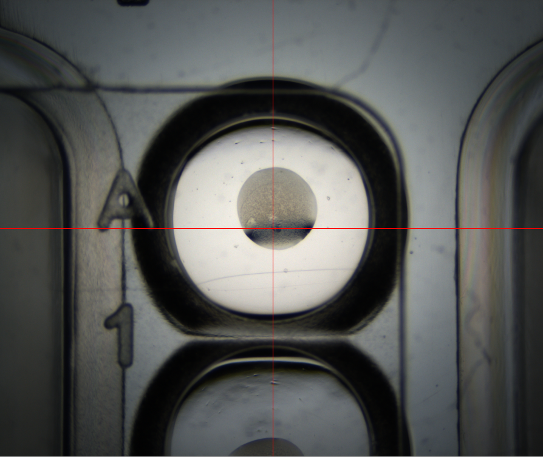
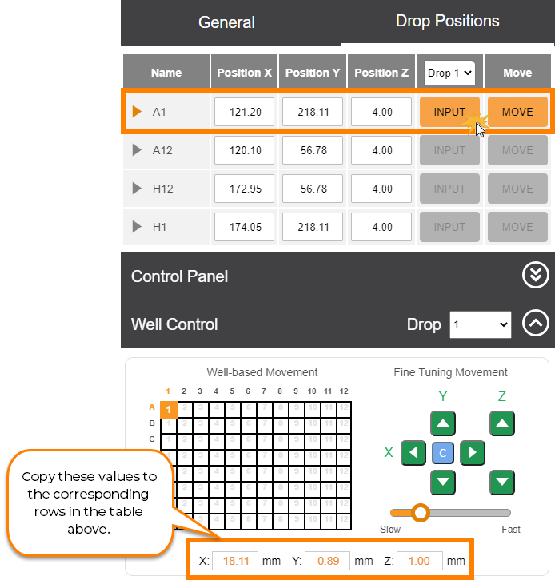

Tuning Plates in ROCK IMAGER FT¶
This topic explains how to tune the drop locations of a plate to ensure clear and precise imaging. Tuning plates involves finding the correct drop position coordinates for the four corner well locations: top-left, top-right, bottom-right, and bottom-left. You may want to tune your plates if the drop images are off-centered or if you add new plates to your system. We recommend that you read About Plate Type Calibration first before proceeding with this tutorial.
Warning
We only recommend advanced users modify these settings. If you need a new plate type added to your imager, then please contact support@formulatrix.com for help.
Prerequisites:
You have added the new plate type in ROCK MAKER.
You have created an experiment in ROCK MAKER. If you aren’t interested in tracking conditions with ROCK MAKER, you can create a proxy experiment.
Your plate has a barcode label affixed to the short side of the plate opposite the A1 position.
You have tuned the reference plate.
To tune plates in ROCK IMAGER FT:
Turn on the ROCK IMAGER FT hardware and run the software.
Add the plate to ROCK IMAGER FT and move it under the imager.
In the ROCK IMAGER FT software, go to the Plate Setup menu. Then, click Plate Type Calibration.
From the Plate Type List, select the plate type that matches the one you placed under the imager.
Selecting the Correct Plate Type from the Plate Type List
In the General panel, make sure the Disable Well Limits option is activated.
Note
Do NOT click Apply at this time.
Disabling Well Limits
Go to the Drop Positions panel and calibrate the X, Y, and Z coordinates for the four corner well locations accordingly.
Select a drop from the Drop list. If your plate has multiple drops per well, make sure to select the correct drop that matches the one you are currently viewing under the live stream. You must calibrate every drop for each of the four corner wells.
Selecting a Drop from the Drop List
Still in the Drop Positions panel, expand the Live Image Options and activate Enable Crosshair Guide.
Use the well graphic in the Well Control option to move to the first well location, e.g. Well A1. Adjust the crosshair’s position using the Fine Tuning Movement control pads and use the scrollbar below them to change the motor speed.
Move the crosshair to the center of the well and use the Z axis control pads to focus the drop image.
Note
You can also adjust the zoom if needed in the Optics and Camera Control below the Well Control option.
Drop A1 with the Crosshair Adjusted to the Center of the Drop
Once you get the precise X, Y, Z coordinates, copy these values to their corresponding rows in the Drop Positions table by clicking Input.
Inputting the Calibration Results to the Corresponding Rows
Repeat steps c - g to tune the other three corner wells of the plate, e.g. A12, H1, and H12.
Verify the well positions by clicking Move. ROCK IMAGER FT should display the center of the drop.
When you are done, click Apply to save the changes. If you are adding a new plate type to the system, follow the additional steps below.
Go to the Default Imaging Settings sub-menu and specify the optics and camera settings you want to use when the selected plate type is being imaged.
Expand the Drop Location option, and select either the Fixed or Locate Drop method. The Fixed method should be used for drops that are centered in the well with consistent relative positions. This method will have the fastest imaging time and is recommended for routine sitting drop experiments. Locate Drop method should be used for soluble protein experiments and is useful for plates where the drop position is not consistent and the size of the drops is small relative to the well area.
When done, click Apply.
In the upper-right corner of the screen, click More Actions and select Export. Find and select the desired location on your computer to save the new plate settings.
{kind=link}
{kind=link}
{kind=link}
{kind=link}
{kind=link}